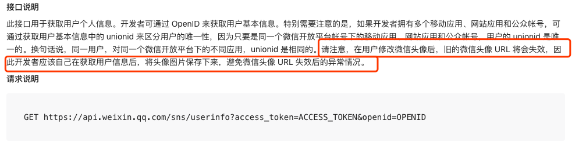
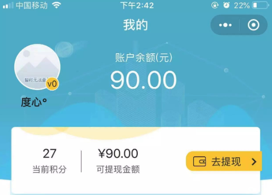
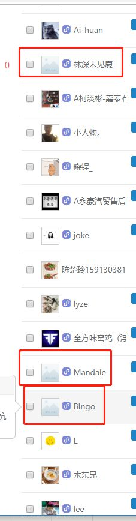
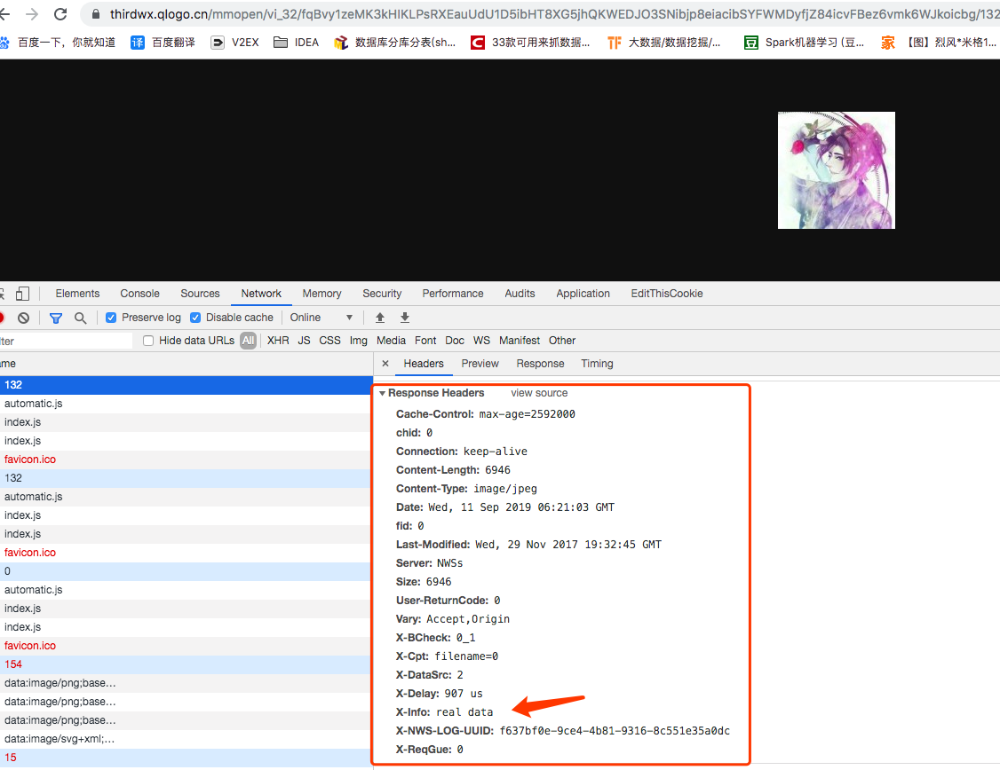
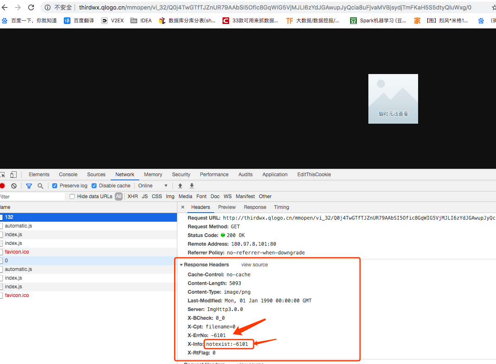

原文连接:https://www.cnblogs.com/flyrock/p/11507341.html
微信头像失效问题说明？
最近工作遇到一个微信头像失效的问题，情况是这样的，我们一个h5页面在微信授权后打开，会存储微信相关昵称和头像信息，不过，我们没有保存图片到自己的服务器，而是仅仅存储微信头像地址，然而过了n多天后，用户在微信修改了自己的头像，这时候，我们的服务是无感知的，又过了n多天，用户去访问我们那个h5页面，发现自己的头像是这样的：

用户找到我们，说自己有头像呀，怎么没显示呢？ 我们也反问他，是否最近改过头像呢，他说没，不过很早之前改过。
而此时就比较尴尬，用户体验超级不好。
然后我们就去查看官方文档，发现这么说的：

官方也建议自己保存下来处理。
然后我们又去google了一把，看下别人是否也被同样的问题坑过。


看来好多用户都遇到了，相关问题链接
经常看到还有人的头像时而好时而不好，那是因为
旧的头像链接失效需要一定的时间，从 CDN 节点一个一个失效。你现在访问到的应该是旧的头像链接，每次访问可能到达不同的 CDN 节点，导致时有时无。
那么如何解决这个问题呢？
我们这边也想了好多方案，我们考虑下几个方面，分两个思路
思路1: 自己本地服务保存并CDN,缺点成本有点高
思路2: 有个策略定时更新头像
- 定期更新下头像链接，不要一直缓存着，比如在 session_key 过期时一起更新下头像链接
- 后台服务定期检查头像链接是否过期（怎么自动判断是否过期呢，下面会详细说明）
- 前端根据头像链接判断是否过期，过期重新授权更新头像信息
下面介绍下，怎么判断微信的头像是否过期了，经过研究发现：
正常的微信图片返回的请求信息如下：

然而异常的图片地址怎么返回的呢？

可以看下异常情况，返回的信息不一样，可以根据X-Info: notexist:-6101 判断或者 X-ErrNo: -6101 关键字
不过还有一个疑问，如果本地存储的话，还会遇到，用户修改头像后，获取的地址可能不是最新的，虽然不会显示一个特别丑陋的头像，这里怎么解决呢，这里需要产品定义个策略，哪些场景需要定期授权，重新更新头像和用户信息等等。
END
如有收获，请帮忙转发，后续会有更好文章贡献，您的鼓励是作者最大的动力！
欢迎关注我的公众号：架构师的修炼，获得独家整理的学习资源和日常干货推送。